Treatment Effects in Nested Subgroups (Section 3.2)
Jean Morrison
January 1, 2017
Last updated: 2018-04-25
workflowr checks: (Click a bullet for more information)-
✔ R Markdown file: up-to-date
Great! Since the R Markdown file has been committed to the Git repository, you know the exact version of the code that produced these results.
-
✔ Environment: empty
Great job! The global environment was empty. Objects defined in the global environment can affect the analysis in your R Markdown file in unknown ways. For reproduciblity it’s best to always run the code in an empty environment.
-
✔ Seed:
set.seed(20180425)The command
set.seed(20180425)was run prior to running the code in the R Markdown file. Setting a seed ensures that any results that rely on randomness, e.g. subsampling or permutations, are reproducible. -
✔ Session information: recorded
Great job! Recording the operating system, R version, and package versions is critical for reproducibility.
-
Great! You are using Git for version control. Tracking code development and connecting the code version to the results is critical for reproducibility. The version displayed above was the version of the Git repository at the time these results were generated.✔ Repository version: c386af2
Note that you need to be careful to ensure that all relevant files for the analysis have been committed to Git prior to generating the results (you can usewflow_publishorwflow_git_commit). workflowr only checks the R Markdown file, but you know if there are other scripts or data files that it depends on. Below is the status of the Git repository when the results were generated:
Note that any generated files, e.g. HTML, png, CSS, etc., are not included in this status report because it is ok for generated content to have uncommitted changes.Ignored files: Ignored: .Rhistory Ignored: .Rproj.user/ Untracked files: Untracked: .Rbuildignore Untracked: R/get_fcr.R Untracked: analysis/biomarker_sims_cache/ Untracked: analysis/ci_bib.bib Untracked: analysis/compare_cis_cache/ Untracked: analysis/compare_cis_temp.Rmd Untracked: analysis/compare_cis_temp_cache/ Untracked: analysis/linreg_sims.rmd Untracked: analysis/linreg_sims_cache/ Untracked: data/sim.list.new.rda Untracked: temp.RData Untracked: walkthroughs/biomarker_sims_cache/ Untracked: walkthroughs/biomarker_sims_files/ Untracked: walkthroughs/ci_bib_small.bib Untracked: walkthroughs/compare_cis_cache/ Untracked: walkthroughs/compare_cis_files/ Untracked: walkthroughs/linreg_sims_cache/ Untracked: walkthroughs/linreg_sims_files/ Unstaged changes: Modified: NAMESPACE Modified: walkthroughs/ci_bib.bib Modified: walkthroughs/compare_cis.rmd
Expand here to see past versions:
| File | Version | Author | Date | Message |
|---|---|---|---|---|
| rmd | c386af2 | Jean Morrison | 2018-04-25 | wflow_publish(“analysis/biomarker_sims.rmd”) |
Simulation Set-up
Here we imagine data from a clinical trial examining the effect of a a treatment on an outcome \(Y\). For each participant we have also collected a biomarker \(W\) and suspect that the treatment has a greater effect for patients with larger values of \(W\). We are interested in establishing a cut-point in \(W\) to guide enrolment of a future trial so we will estimate the treatment effect in subgroups defined by the biomarker.
The true relationship between \(Y\), the treatment, and the biomarker is given by \[ E[Y | trt, W] = \begin{cases} 0 \qquad & W < 0.5\\ \frac{1}{2}\cdot trt & W \geq 0.5 \end{cases}. \] For participant \(i\), the observed value of \(Y\) is \(Y_i = E[Y | W_i, trt_i] + \epsilon\) where \(\epsilon\sim N(0, 1/4)\).
In each simulation, we generate data for 400 participants — 200 in each treatment arm. The vlaue of the biomarker is uniformly distributed between 0 and 1. Below, we generate data for one simulation:
library(ggplot2)
library(rcc)
library(rccSims)
library(tidyr)
library(ashr)
library(parallel)
library(selectiveInference)
library(gridExtra)
set.seed(1e7)
n <- 2*200
mean_outcome <- function(x, trt){
if(x < 0.5) return(0)
return(0.5*trt)
}
dat <- data.frame("trt"=rep(c(0, 1), each=n/2), "w"=runif(n=n))
dat$Ey <- apply(dat, MARGIN=1, FUN=function(z){mean_outcome(z[2],z[1])})
dat$y <- rnorm(n=n, mean=dat$Ey, sd=0.5)
dat$trt <- as.factor(dat$trt)
ggplot(dat) + geom_line(aes(x=w, y=Ey, group=trt, col=trt)) +
geom_point(aes(x=w, y=y, col=trt, group=trt)) +
ylab("E[Y]") + theme_bw() + theme(panel.grid = element_blank())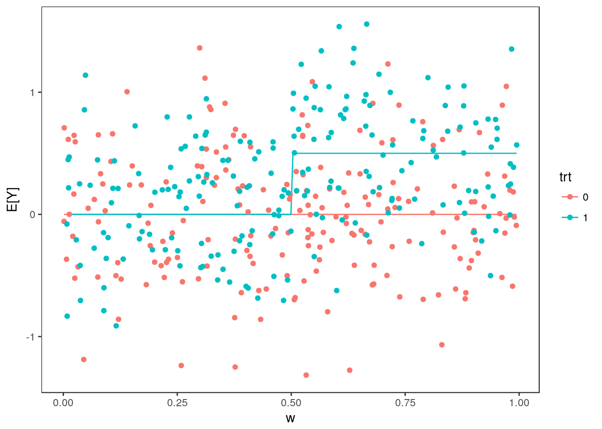
We will consider 100 cutopoints between 0.1 and 0.9, \(w_1, \dots, w_{100}\). For each cutpoint, \(j \in 1, \dots, 100\), we estimate the difference in average treatment effect for individuals above and below the cutpoint: \[ \beta_j = (E[Y | trt=1, W \geq w_j] - E[Y | trt=0, W \geq w_j])- (E[Y | trt=1, W < w_j] - E[Y | trt=0, W < w_j])\]
We can estimate \(\beta_j\) by fitting the parameters in the regression
\[ Y = \beta_0 + \alpha_1 trt + \alpha_2 1_{W > w_j} + \beta_j trt 1_{W > w_j} + \epsilon \] by least squares. Calculating \(\hat{\beta}_j\) for each cutpoint:
n.cutpoints <- 100
cutpoints <- seq(0.1, 0.9, length.out=n.cutpoints)
#Indicator variables
ix <- sapply(cutpoints, FUN=function(thresh){as.numeric(dat$w >= thresh)})
#Run the linear regressions
stats <- apply(ix, MARGIN=2, FUN=function(ii){
f <- lm(y~trt*ii, data=dat)
summary(f)$coefficients[4, 1:3]
})
stats <- data.frame(matrix(unlist(stats), byrow=TRUE, ncol=3))
names(stats) <- c("beta", "se", "tstat")
stats$cutpoint <- cutpoints
j <- order(abs(stats$tstat), decreasing=TRUE)
stats$rank <- match(1:nrow(stats), j)
head(stats) beta se tstat cutpoint rank
1 0.3857081 0.1694744 2.275907 0.1000000 58
2 0.4327279 0.1639602 2.639225 0.1080808 50
3 0.4194834 0.1570891 2.670354 0.1161616 47
4 0.3477664 0.1529919 2.273104 0.1242424 60
5 0.3417814 0.1501157 2.276786 0.1323232 57
6 0.3852470 0.1489406 2.586582 0.1404040 52The true value of \(\beta_j\) is \[0.5*\frac{min(1-w_j, 0.5)}{(1-w_j)} - 0.5\frac{max(0, w_j-0.5)}{w_j}\]
stats$truth <-sapply(cutpoints, FUN=function(wj){
0.5*(min(1-wj, 0.5)/(1-wj)) - 0.5*max(0, wj-0.5)/wj})Plotting effect size estimates and true parameter values vs. cutpoint:
stats_long <- gather(stats[, c("cutpoint", "beta", "truth")], "type", "value", -cutpoint)
ggplot(stats_long) + geom_point(aes(x=cutpoint, y=value, group=type, color=type)) +
scale_color_discrete(labels=c("Estimate", "Truth")) + ggtitle("Effect Size Estimates") +
theme_bw() + theme(panel.grid=element_blank(), axis.title.y=element_blank(), legend.title = element_blank())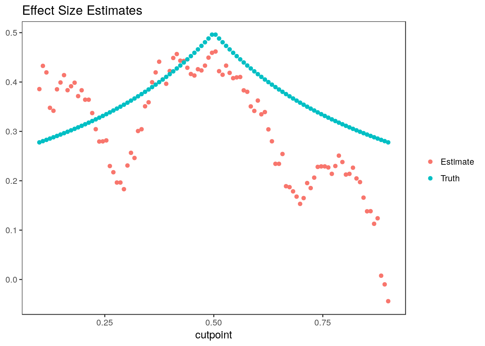
Because we use the same individuals to estimate each parameter, the estimates are highly correlated.
Confidence Intervals
Non-Parametric Bootstrap
The non-parametric bootstrap is the most appropriate choice for these data since the estimates are correlated. Only the non-parametric bootstrap can model this correlation. To use the nonpar_bs_ci function in the rcc package to compute the nonparametric boostrap confidence intervals, we must supply an analysis function. We will use a data object that has \(trt\), \(w\), \(E[Y]\), and \(Y\) as the first four columns and the indicator variables \(1_{W > w_j}\) as the next 100 columns as input.
mydata <- cbind(dat, ix)
analysis.func <- function(data){
y <- data[,4]
trt <- data[,1]
stats <- apply(data[, 5:(n.cutpoints + 4)], MARGIN=2, FUN=function(ii){
f <- lm(y~trt*ii)
if(nrow(summary(f)$coefficients) < 4) return(rep(0, 3))
summary(f)$coefficients[4, 1:3]
})
stats <- data.frame(matrix(unlist(stats), byrow=TRUE, ncol=3))
names(stats) <- c("estimate", "se", "statistic")
return(stats)
}In the next chunk, we calculate the non-parametrci bootstrap confidence intervals (Algorithm 3 in the paper):
ci.nonpar <- nonpar_bs_ci(data=mydata, analysis.func=analysis.func, n.rep=500, parallel=TRUE)
head(ci.nonpar) est statistic rank ci.lower ci.upper debiased.est
1 0.3857081 2.275907 58 0.1880470 0.5438207 0.3650118
2 0.4327279 2.639225 50 0.2334653 0.5915110 0.4065245
3 0.4194834 2.670354 47 0.2073203 0.5666934 0.3875687
4 0.3477664 2.273104 60 0.1572344 0.5024437 0.3268636
5 0.3417814 2.276786 57 0.1349982 0.4934780 0.3168783
6 0.3852470 2.586582 52 0.1730282 0.5410340 0.3570882ci.nonpar <- ci.nonpar[, c("ci.lower", "ci.upper")]
sum(ci.nonpar[,1] <= stats$truth & stats$truth <= ci.nonpar[,2])/n.cutpoints[1] 0.96Here are the intervals plotted versus rank. Colored points indicate the true value of the parameter.
plot_cis(stats$rank, ci.nonpar, stats$truth, plot.truth=TRUE) +
ggtitle("Non-Parametric Bootstrap Confidence Intervals")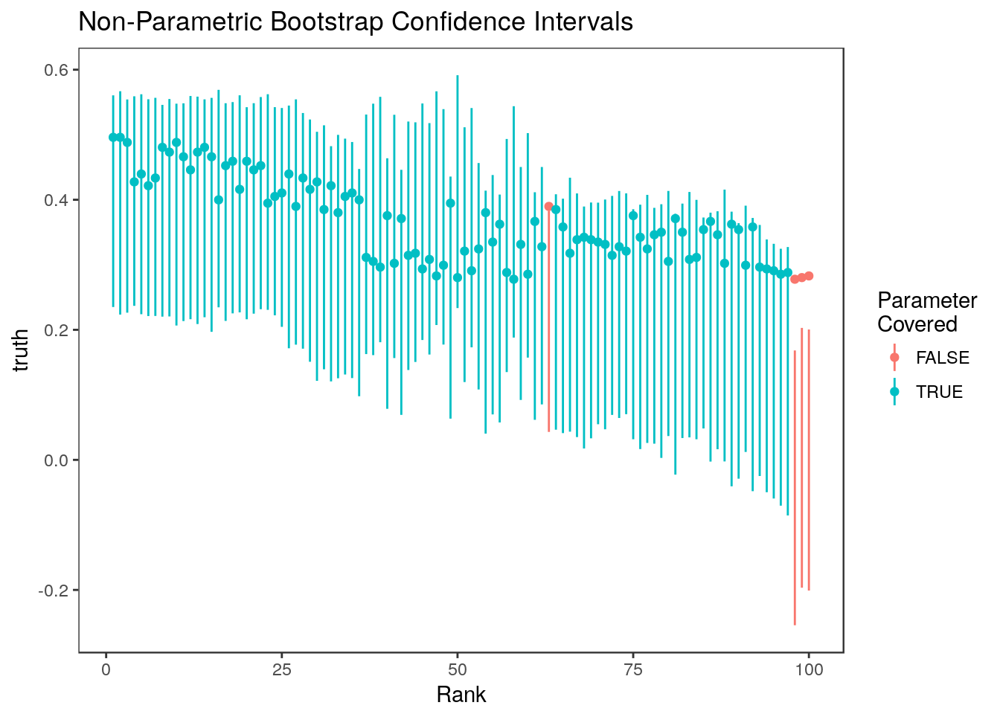 Here they are plotted versus cutpoint:
plot_cis(cutpoints, ci.nonpar, stats$truth, plot.truth=TRUE) +
ggtitle("Non-Parametric Bootstrap Confidence Intervals") + xlab("Cutpoint")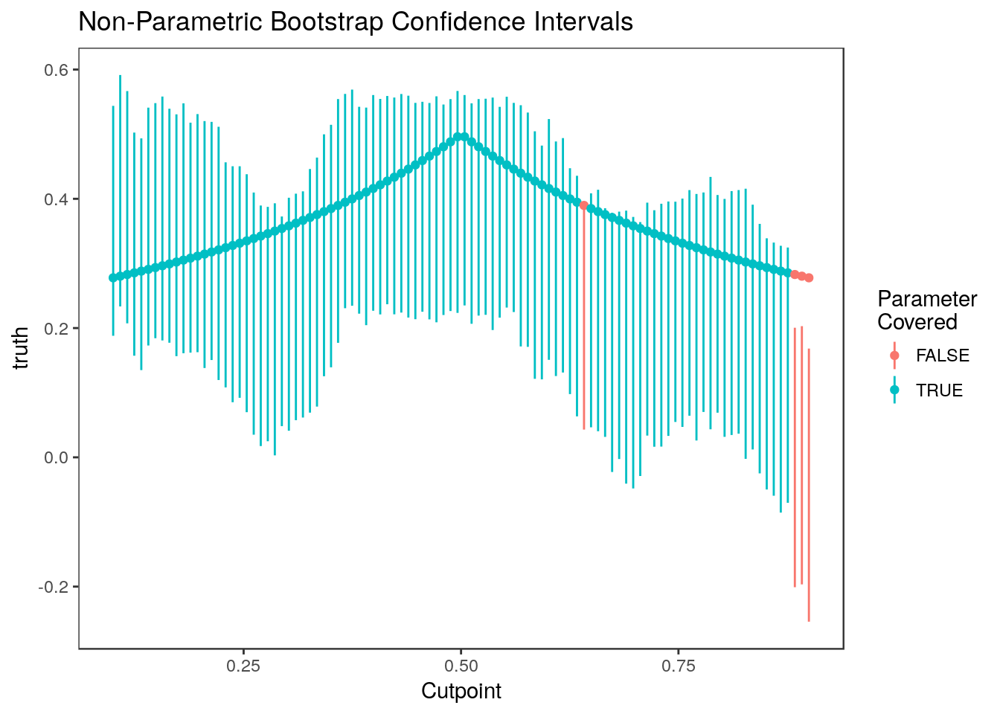
Parametric Bootstrap
We could instead use the parametric bootstrap (Algorithm 2 and Supplemental Algorithm 2):
ci.par <- rcc::par_bs_ci(beta=stats$beta, se=stats$se, n=500, use.abs=TRUE)[, c("ci.lower", "ci.upper")]Here are the intervals plotted versus rank. Colored points indicate the true value of the parameter.
plot_cis(stats$rank, ci.par, stats$truth, plot.truth=TRUE) +
ggtitle("Parametric Bootstrap Confidence Intervals")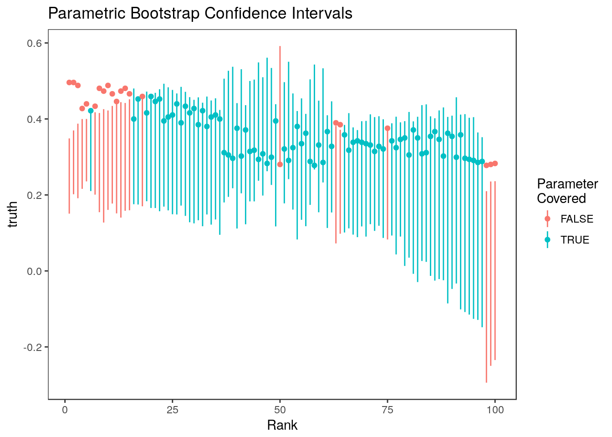 Here they are plotted versus cut-point:
plot_cis(cutpoints, ci.par, stats$truth, plot.truth=TRUE) +
ggtitle("Parametric Bootstrap Confidence Intervals") + xlab("Cutpoint")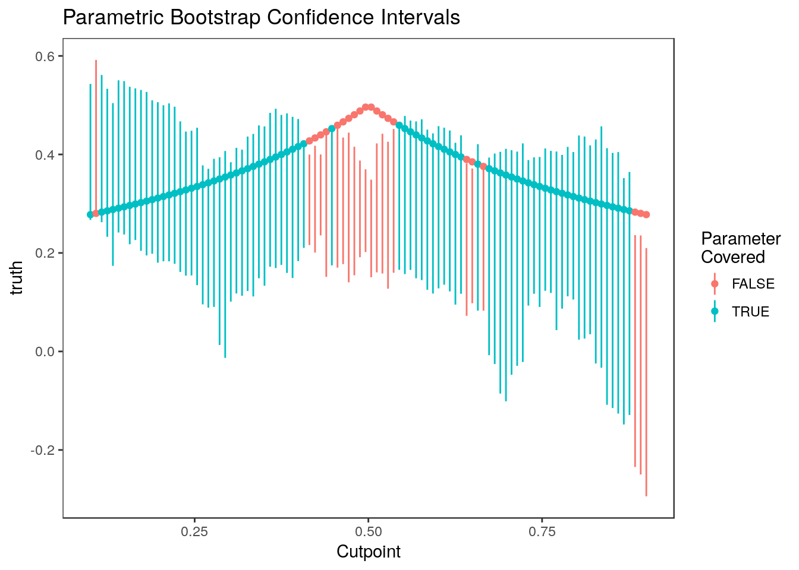
The parametric bootstrap confidence intervals perform more poorly than the non-parametric confidence intervals because estimates are highly correlated but this isn’t modeled in the basic parametric bootstrapping algorithm. These intervals tend to undercover parameters associated with the most and least significant estimates.
Marginal Confidence Intervals
For comparison, let’s look at the naive confidence intervals:
ci.naive <- cbind(stats$beta-stats$se*qnorm(0.95), stats$beta + stats$se*qnorm(0.95))
mean(ci.naive[,1] <= stats$truth & stats$truth <= ci.naive[,2])[1] 0.93plot_cis(stats$rank, ci.naive, stats$truth, plot.truth=TRUE) +
ggtitle("Standard Marginal Confidence Intervals")
plot_cis(cutpoints, ci.naive, stats$truth, plot.truth=TRUE) +
ggtitle("Standard Marginal Confidence Intervals") + xlab("Cutpoint")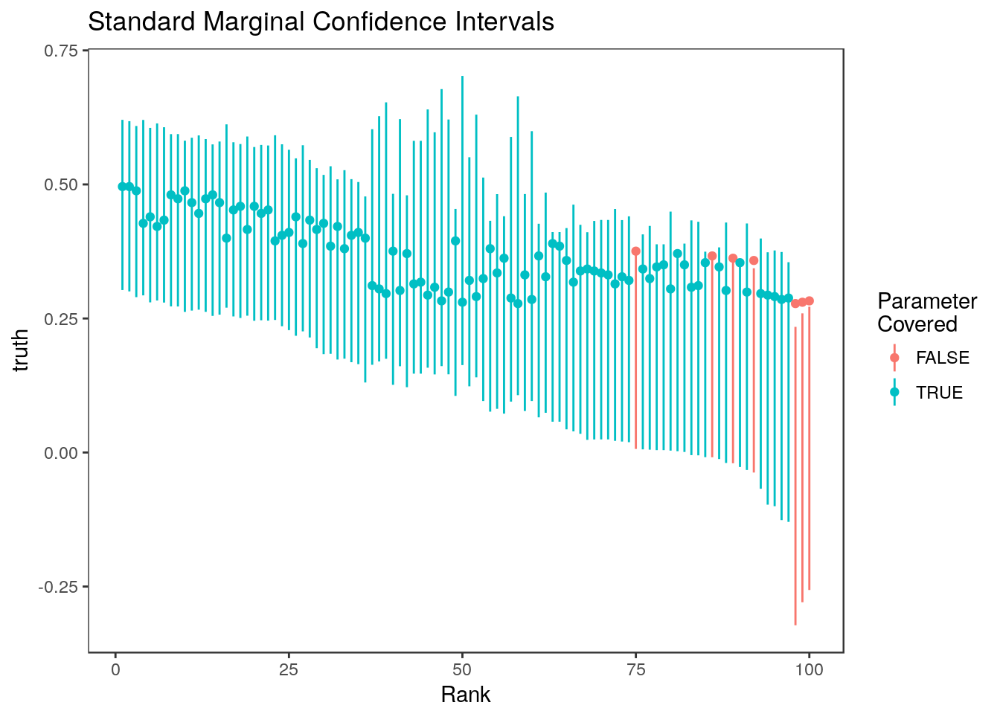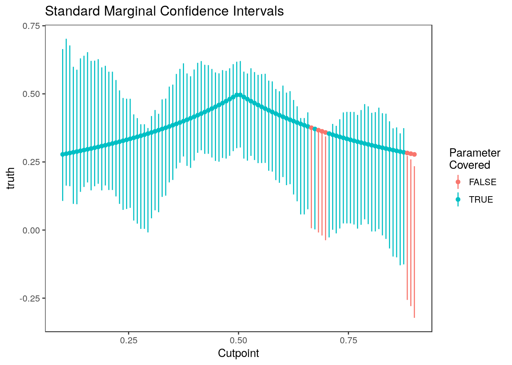 These do pretty well since the estimates are so correlated.
Selection Adjusted Confidence Intervals
Here are the selection adjusted intervals of the intervals of Weinstein, Fithian, and Benjamini (2013) after selecting the top 10 (10%) parameters. To make running simulations easier, we have included the code distributed by Weinstein, Fithian, and Benjamini (2013) in the rccSims package. The Shortest.CI function used below is part of this code.
#We need to give this method the "cutpoint" or minimum value of the test statistic
ct <- abs(stats$tstat[stats$rank==11])
wfb <- lapply(stats$tstat, FUN=function(x){
if(abs(x) < ct) return(c(NA, NA))
ci <- try(rccSims:::Shortest.CI(x, ct=ct, alpha=0.1), silent=TRUE)
if(class(ci) == "try-error") return(c(NA, NA)) #Sometimes WFB code produces errors
return(ci)
})
ci.wfb <- matrix(unlist(wfb), byrow=TRUE, nrow=n.cutpoints)
ci.wfb[,1]<- ci.wfb[,1]*stats$se
ci.wfb[,2]<- ci.wfb[,2]*stats$se
mean(ci.wfb[,1] <= stats$truth & ci.wfb[,2]>= stats$truth, na.rm=TRUE)[1] 1Here are the 10 WFB intervals which all cover their respective parameters
Warning: Removed 90 rows containing missing values (geom_linerange).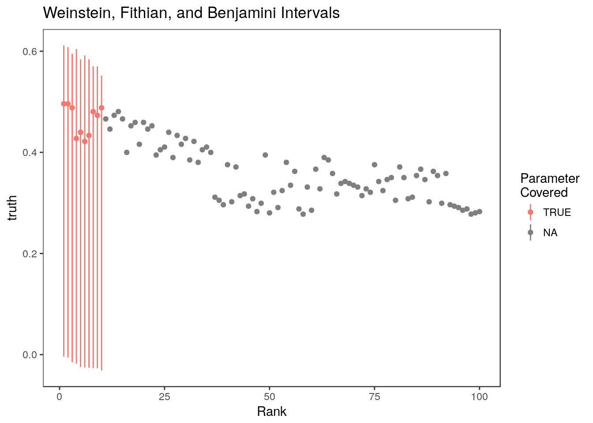
Here are the selection adjusted confidence intervals of Reid, Taylor, and Tibshirani (2014). These are implemented in the selectiveInference R package.
M <- manyMeans(y=stats$tstat, k=0.1*n.cutpoints, alpha=0.1, sigma=1)
ci.rtt <- matrix(nrow=n.cutpoints, ncol=2)
ci.rtt[M$selected.set, ] <- M$ci
mean(ci.rtt[,1] <= stats$truth & ci.rtt[,2]>= stats$truth, na.rm=TRUE)[1] 0.9Warning: Removed 10 rows containing missing values (geom_linerange).
This method gives the 10th ranked parameter a very short confidence interval!
Empirical Bayes Confidence Intervals
Here are the credible intervals we get out of ashr (Stephens (2016))
ash.res <- ash(betahat = stats$beta, sebetahat = stats$se, mixcompdist = "normal")
ci.ash <- ashci(ash.res, level=0.9, betaindex = 1:n.cutpoints, trace=FALSE)
mean(ci.ash[,1]<= stats$truth & ci.ash[,2] >= stats$truth)[1] 0.85Here are the ashr intervals at all ranks 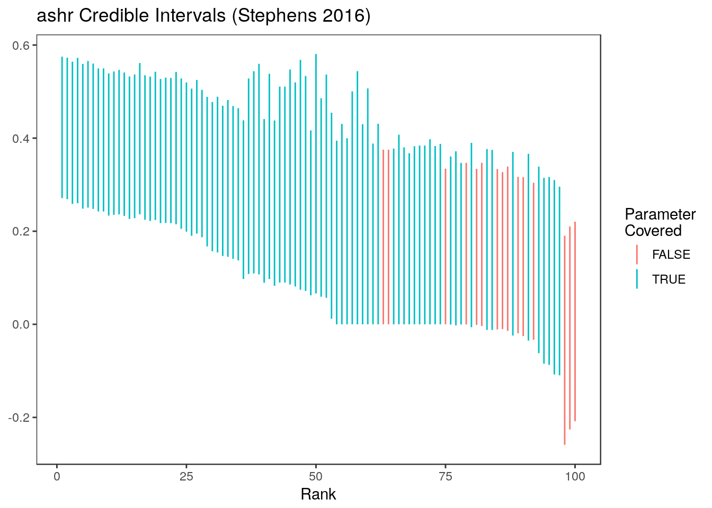
Replicate the results in the paper
The steps above are all implemented by the biomarker_sim function in the rccSims package. This code will generate the results in package:
biomarker_results <- biomarker_sim(n=400, n.rep = 400, n.cutpoints = 100, seed =1e7)These results are also included as a built-in data set in the rccSims package.
To generate the plots shown in the paper:
data("biomarker_results", package="rccSims")
coverageplot <- rccSims::plot_coverage(biomarker_results, proportion=1,
cols=c("black", "deeppink3", "red", "gold4", "forestgreen", "purple"),
simnames=c("naive", "par", "nonpar", "ash", "wfb", "selInf1"),
ltys= c(2, 1, 3, 6, 4, 2),
span=0.5, main="Rank Conditional Coverage", y.range=c(-0.02, 1.02),
legend.position = "none") + theme(plot.title=element_text(hjust=0.5))
widthplot <- rccSims::plot_width(biomarker_results, proportion=1,
cols=c("black", "deeppink3", "red", "gold4", "forestgreen", "purple"),
simnames=c("naive", "par", "nonpar", "ash", "wfb", "selInf1"),
ltys= c(2, 1, 3, 6, 4, 2), span=0.5, main="Interval Width",
legend.position = "none") + theme(plot.title=element_text(hjust=0.5))Warning in sqrt(sum.squares/one.delta): NaNs producedlegend <- rccSims::make_sim_legend(legend.names = c("Marginal", "Parametric\nBootstrap",
"Non-Parametric\nBootstrap", "ash", "WFB", "RTT"),
cols=c("black", "deeppink3", "red", "gold4", "forestgreen", "purple"),
ltys= c(2, 1, 3, 6, 4, 2))
coverageplotWarning: Removed 181 rows containing non-finite values (stat_smooth).
Warning: NaNs producedWarning in stats::qt(level/2 + 0.5, pred$df): NaNs produced
Warning in stats::qt(level/2 + 0.5, pred$df): NaNs producedwidthplotWarning: Removed 182 rows containing missing values (geom_path).legend$plot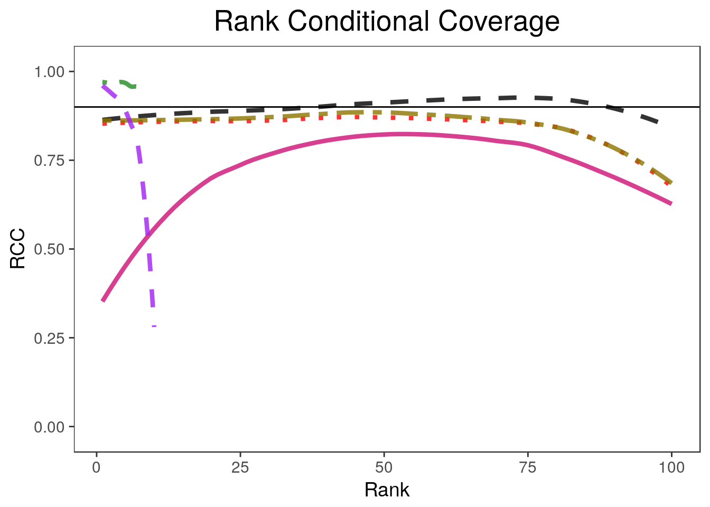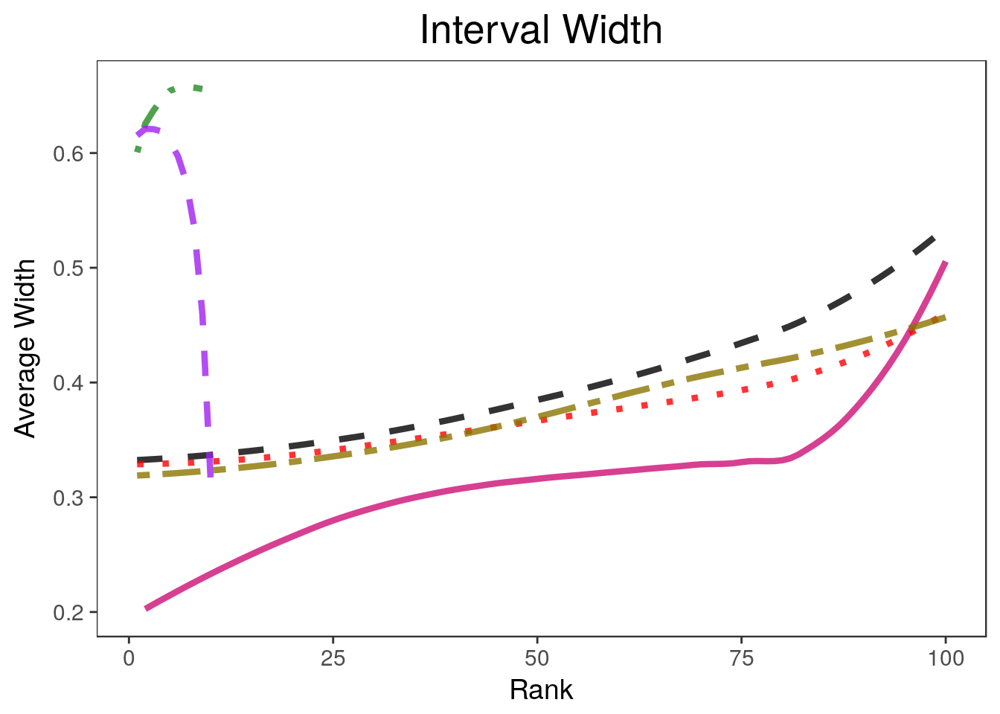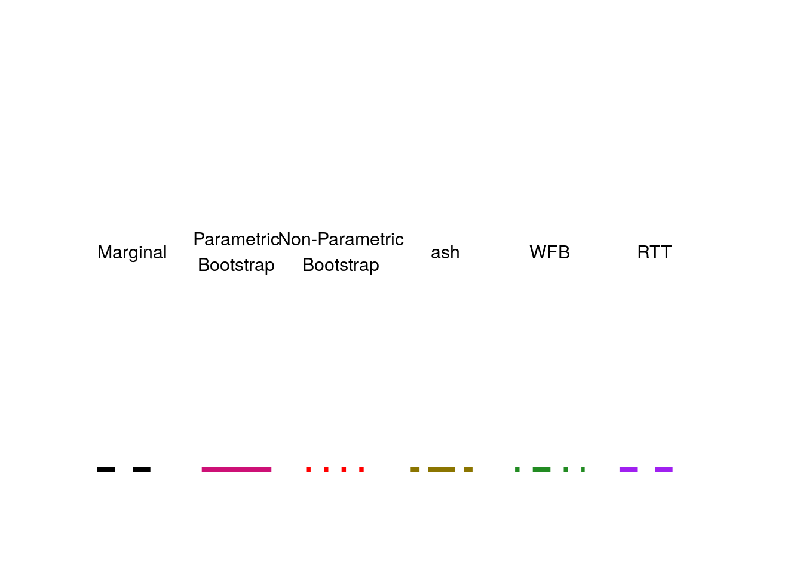
Session information
sessionInfo()R version 3.4.2 (2017-09-28)
Platform: x86_64-pc-linux-gnu (64-bit)
Running under: Ubuntu 17.10
Matrix products: default
BLAS: /usr/lib/x86_64-linux-gnu/blas/libblas.so.3.7.1
LAPACK: /usr/lib/x86_64-linux-gnu/lapack/liblapack.so.3.7.1
locale:
[1] LC_CTYPE=en_US.UTF-8 LC_NUMERIC=C
[3] LC_TIME=en_US.UTF-8 LC_COLLATE=en_US.UTF-8
[5] LC_MONETARY=en_US.UTF-8 LC_MESSAGES=en_US.UTF-8
[7] LC_PAPER=en_US.UTF-8 LC_NAME=C
[9] LC_ADDRESS=C LC_TELEPHONE=C
[11] LC_MEASUREMENT=en_US.UTF-8 LC_IDENTIFICATION=C
attached base packages:
[1] parallel stats graphics grDevices utils datasets methods
[8] base
other attached packages:
[1] gridExtra_2.3 selectiveInference_1.2.4
[3] survival_2.41-3 intervals_0.15.1
[5] glmnet_2.0-16 foreach_1.4.4
[7] Matrix_1.2-11 ashr_2.2-7
[9] tidyr_0.8.0 rccSims_0.1.0
[11] rcc_1.0.0 ggplot2_2.2.1
loaded via a namespace (and not attached):
[1] Rcpp_0.12.16 compiler_3.4.2 pillar_1.2.1
[4] git2r_0.21.0 plyr_1.8.4 workflowr_1.0.1
[7] R.methodsS3_1.7.1 R.utils_2.6.0 iterators_1.0.9
[10] tools_3.4.2 digest_0.6.15 evaluate_0.10.1
[13] tibble_1.4.2 gtable_0.2.0 lattice_0.20-35
[16] rlang_0.2.0 yaml_2.1.18 stringr_1.3.0
[19] knitr_1.20 tidyselect_0.2.4 rprojroot_1.3-2
[22] grid_3.4.2 glue_1.2.0 rmarkdown_1.9
[25] purrr_0.2.4 magrittr_1.5 whisker_0.3-2
[28] splines_3.4.2 backports_1.1.2 scales_0.5.0
[31] codetools_0.2-15 htmltools_0.3.6 MASS_7.3-47
[34] assertthat_0.2.0 colorspace_1.3-2 labeling_0.3
[37] stringi_1.1.7 pscl_1.5.2 lazyeval_0.2.1
[40] munsell_0.4.3 doParallel_1.0.11 truncnorm_1.0-8
[43] SQUAREM_2017.10-1 R.oo_1.21.0 Reid, Stephen, Jonathon Taylor, and Robert Tibshirani. 2014. “Post selection point and interval estimation of signal sizes in Gaussian samples.” arXiv Preprint arXiv:1405.3340, May. http://arxiv.org/abs/1405.3340.
Stephens, Matthew. 2016. “False discovery rates: a new deal.” Biostatistics, October. doi:kxw041. doi: 10.1093/biostatistics/kxw041.
Weinstein, Asaf, William Fithian, and Yoav Benjamini. 2013. “Selection Adjusted Confidence Intervals With More Power to Determine the Sign.” Journal of the American Statistical Association 108 (501). Taylor & Francis Group: 165–76. doi:10.1080/01621459.2012.737740.
This reproducible R Markdown analysis was created with workflowr 1.0.1